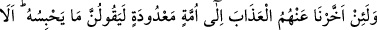
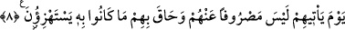

hem de niyet bakımından en iyisi ve güzelidir.
İşte birinci hal, kâfirlerin halidir. İkincisi, münafıkların halidir. Üçüncüsü iyilerin
(ebrâr) halidir. Dördüncüsü ise Allah’a yakın kulların (mukarrebûn) halidir. Şu âyette
Allah Teâlâ mukarreblerin haline ibare ile, diğerlerinin hallerine ise işaret yoluyla
şöyle buyurmuştur: “Biz onların hangisinin daha güzel amel işleyeceğini deneyelim
diye yeryüzündeki her şeyi dünyaya mahsus bir ziynet yaptık.”
(el-Kehf, 18/7)”
Hâfız der ki:
Hurilerle beraber olmayı istersem hatâ olur
Çünkü Sen’in hayalinle diğerlerinden geçerim
Allah’ım, bizi sana kaçan/koşan ve huzurunda bulunanlardan eyle.
Ey Muhammed, “böyle iken yine sen:” kavmin olan Mekkeliler’e “Öldükten sonra”
yani kıyamet günü “diriltileceksiniz,” ey mükellefler! “desen” Mekkeliler’den “inkar
edenler mutlaka: “Bu” öldükten sonra diriltmeden bahseden Kur’an, “apaçık bir
büyüden başka bir şey değildir.” Yani Kur’an bâtıllık konusunda büyü gibidir. Çünkü
büyü hiç şüphesiz boş bir aldatma ve göz boyamadır. “derler.” Müşrikler Kur’an’ı büyü
yerine koyunca, bu düşünceye Kur’an’daki diriltme ve diğer hususların inkarı da
girmektedir.
8. Andolsun, eğer onlardan azabı sayılı bir süreye kadar ertelesek, mutlaka
‘Onun gelmesini engelleyen nedir?’ derler. İyi bilin ki o, başlarına geldiği gün bir
daha onlardan geri çevrilmez ve alay ettikleri şey kendilerini kuşatmış olur.
“Andolsun, eğer onlardan” vaad edilmiş bulunan “azabı, sayılı bir süreye kadar”
yani az sayıda gün, demektir. Çünkü sayıya giren her şey azdır. “ertelesek” kâfirler
“mutlaka ‘Onun gelmesini engelleyen nedir?” azabı gelmekten ve inmekten alıkoyan
şey nedir? “derler.” Sanki Allah azap indirmek istiyormuş da bir mâni bunu
engelliyormuş gibi... Müşrikler bu soruyu alay etmek için acele isteme tarzında
soruyorlardı. Maksadları azabın geleceğini itiraf etmek ve onu alıkoyanı sorup
öğrenmeye çalışmak değil, azabın geleceğini fakat o anda alıkonduğunu inkar etmektir.
“İyi bilin ki o” Bedir Savaşı’ndaki gibi bir azab, “başlarına geldiği gün bir daha
onlardan geri çevrilmez” kendilerinden uzaklaştırılıp savuşturulmaz. Yani azabı sizden